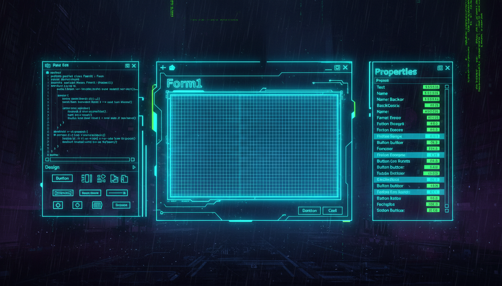

Form клас, властивості, події, дизайнер Visual Studio

Form — це контейнер верхнього рівня для елементів управління. Кожна форма представляє вікно додатка.
// Створення форми програмно
Form^ mainForm = gcnew Form();
// Основні властивості
mainForm->Text = "Головна форма"; // Заголовок
mainForm->Width = 1024; // Ширина
mainForm->Height = 768; // Висота
mainForm->StartPosition = FormStartPosition::CenterScreen;
mainForm->FormBorderStyle = FormBorderStyle::Sizable;
mainForm->MaximizeBox = true;
mainForm->MinimizeBox = true;
mainForm->BackColor = Color::FromArgb(30, 30, 60);
mainForm->ForeColor = Color::White;
// Показ форми
mainForm->Show();
// Або модальний показ
dialog->ShowDialog();| Властивість | Опис | Тип |
|---|---|---|
| Text | Заголовок вікна | String^ |
| Size | Розмір (Width, Height) | Size |
| Location | Позиція (X, Y) | Point |
| StartPosition | Початкова позиція | FormStartPosition |
| FormBorderStyle | Стиль рамки | FormBorderStyle |
| BackColor | Колір фону | Color |
| Opacity | Прозорість (0-1) | double |
| TopMost | Поверх інших вікон | bool |
// Обробка подій
mainForm->Load += gcnew EventHandler(this, &MainForm::OnFormLoad);
mainForm->FormClosing += gcnew FormClosingEventHandler(this, &MainForm::OnFormClosing);
mainForm->Resize += gcnew EventHandler(this, &MainForm::OnFormResize);
// Лямбда-обробник (C++11)
mainForm->Click += gcnew EventHandler(
[](Object^ sender, EventArgs^ e) {
MessageBox::Show("Клік!");
}
);